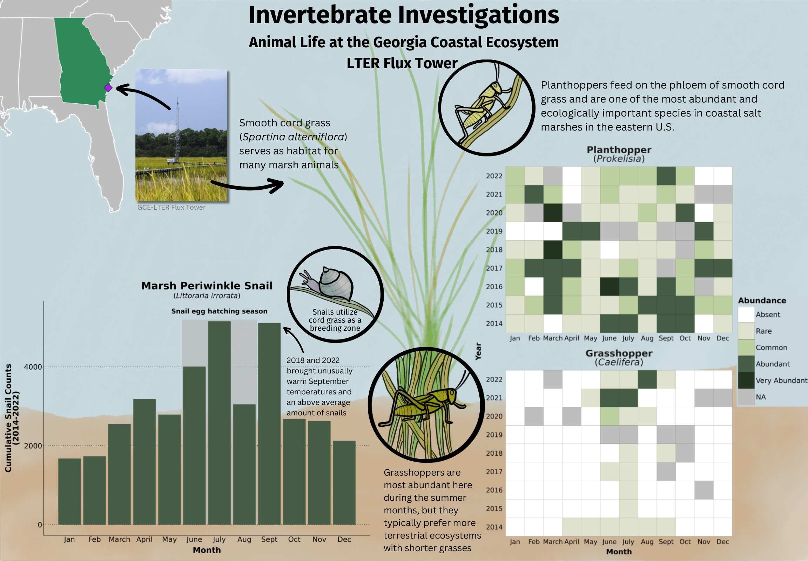
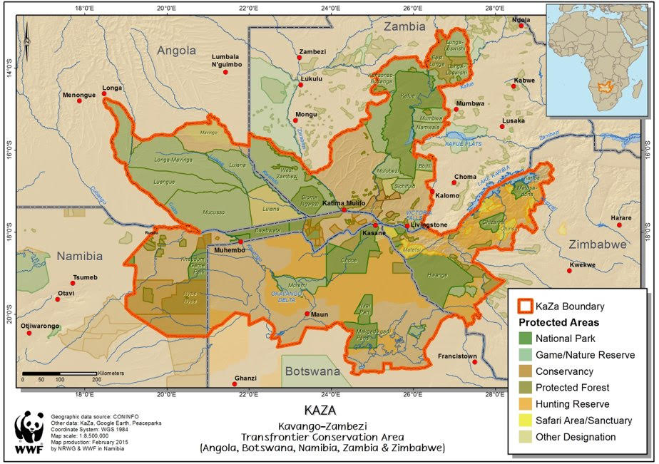
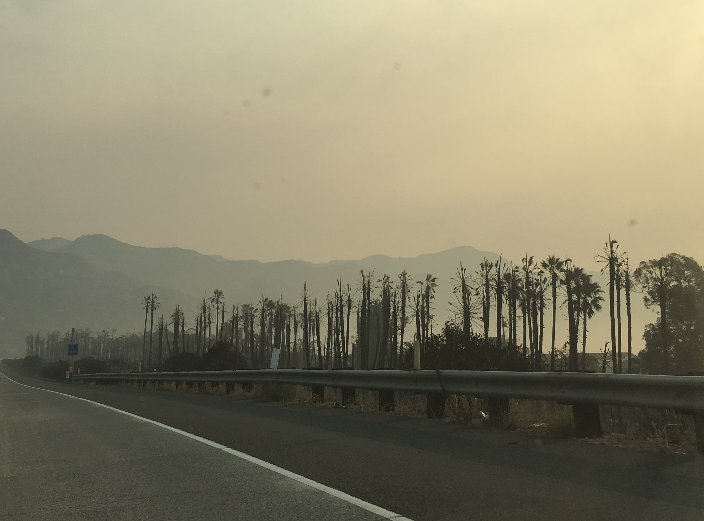
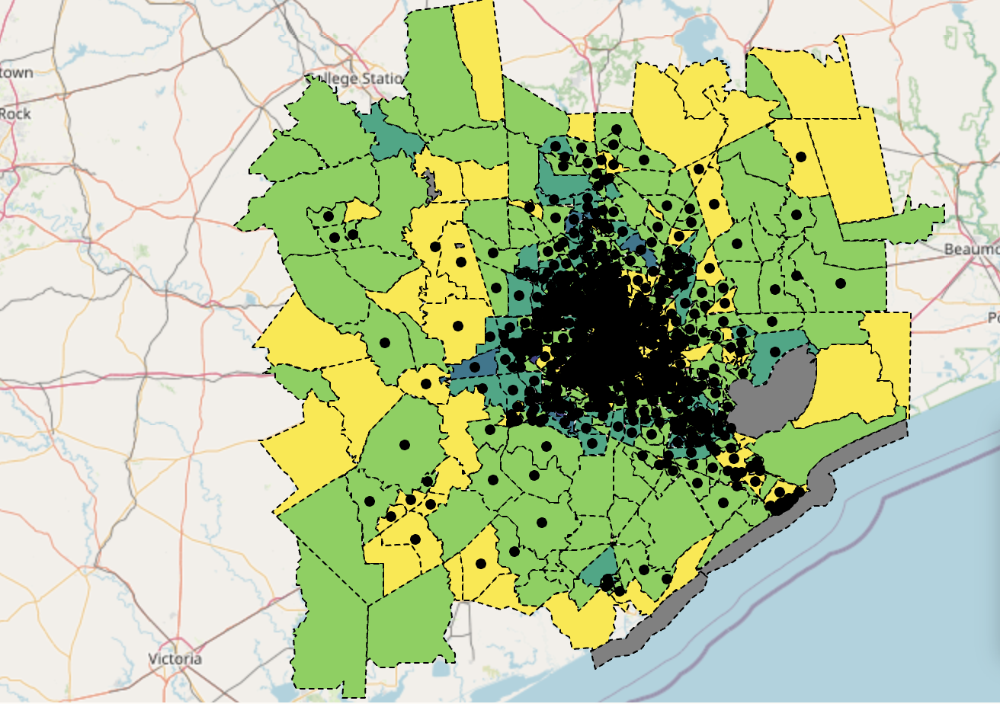
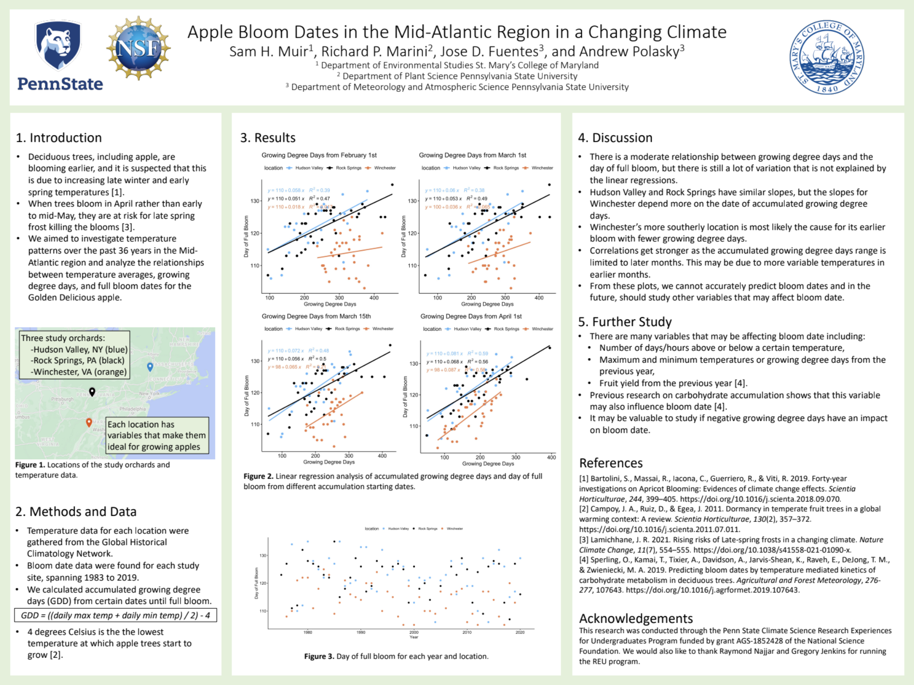
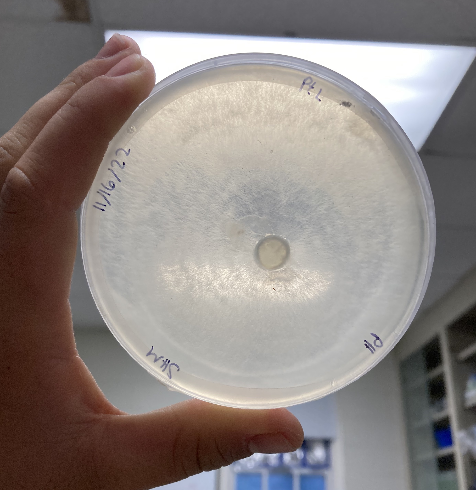

Home
About
Projects & Blog
CV
Projects & Blog
some science and thoughts
Categories
All
(7)
Agriculture
(1)
Climate
(2)
Coastal
(2)
EJ
(1)
Ecology
(2)
GIS
(2)
MEDS
(5)
Plants
(2)
Python
(1)
R
(3)

Invertebrate Investigations
MEDS
Ecology
Coastal
Animal life at the Georgia Coastal Ecosystem LTER Flux Tower
Sam Muir
Mar 9, 2024
The influence of photosynthetic rate and ecological threats on plant species population trends
Plants
Climate
R
MEDS
Predicting population trends for those with an unknown status
Sam Muir
Dec 15, 2023

Ethical Challenges in Investigating Human-Elephant Conflict
MEDS
EJ
Considerations of Research in KAZA with Insights from AI Blindspot
Sam Muir
Dec 10, 2023

The Thomas Fire in Santa Barbara County 2017-2018
GIS
MEDS
Python
Visualizing the burn area and change in air quality index
Sam Muir
Dec 5, 2023

Identifying power outages in Houston, TX from February 2021 storms
GIS
MEDS
R
Created for EDS223: Geospatial Analysis for the Masters of Environmental Data Science program at UCSB
Sam Muir
Nov 26, 2023

Apple bloom dates in the Mid-Atlantic region in a changing climate
Agriculture
Climate
R
I spent the summer of 2021 as an
NSF REU
student at Penn State University researching climate and apple bloom changes with Dr. Rich…
Sam Muir
Nov 13, 2023

Phytophthora presence in Southern Maryland coastal soils
Plants
Ecology
Coastal
This was my directed research project as an undergraduate student at St. Mary’s College of Maryland in Dr. Lorena Torres-Martinez’s lab.
Sam Muir
Nov 10, 2023
No matching items